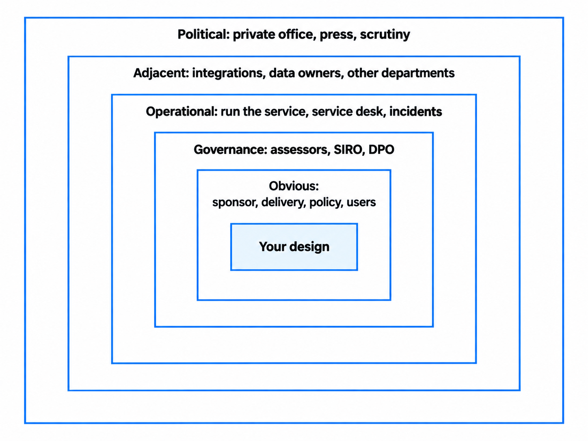
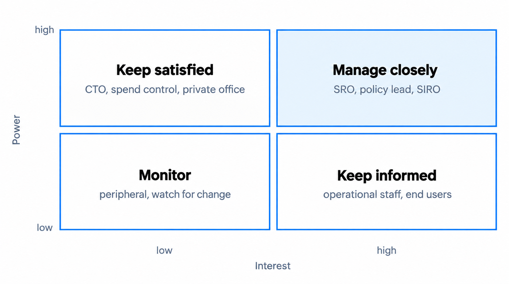
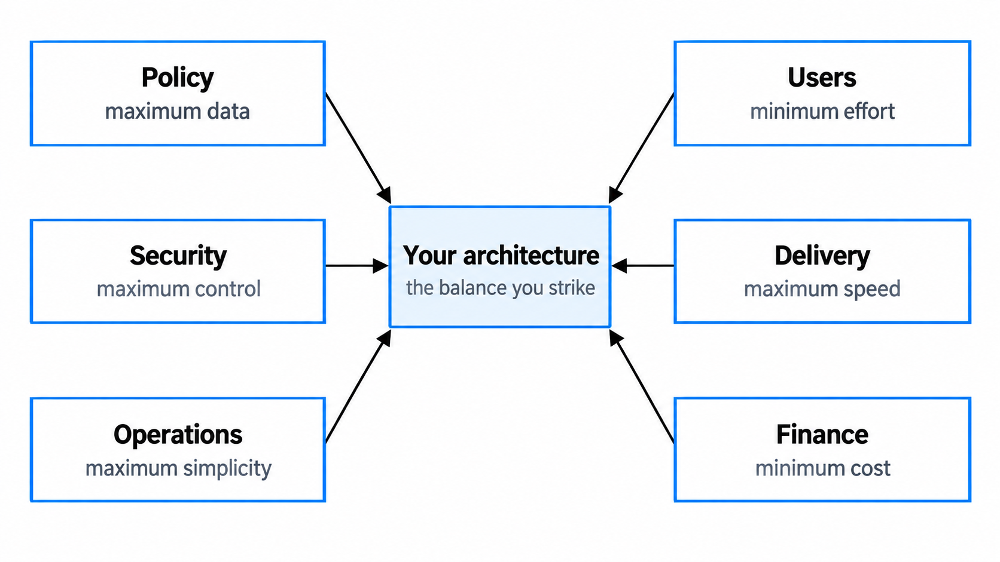

Users, stakeholders and the people around your design
Once you understand the problem, the next question is who can explain it, who is affected by it and who can change or constrain the response. Architecture decisions sit inside a network of users, service teams, decision-makers, specialists, suppliers and dependent services. If you understand only the technology, you understand only part of the design.
You'll come away with:
- A practical way to map the people and organisations around a design.
- A more careful way to use power and interest without overlooking users or operational knowledge.
- A method for turning different concerns into requirements, constraints, evidence and decisions.
- Ways to handle disagreement without assuming that the architect has the final say.
Stakeholder understanding is part of architecture
A technically sound design can still fail if operations cannot support it, another service cannot provide its data, a control excludes some users or the person accountable for the service will not accept the risk.
Stakeholder management is not the architect's sole responsibility. Product, delivery, analysis and user-centred design roles all contribute. The architect brings a particular question: how do these people's needs, authority, knowledge and dependencies affect the design and its decisions?
The Government Digital and Data Profession Capability Framework expects Solution Architects to communicate and work effectively with stakeholders, manage risks and decisions transparently, and understand how other teams contribute to outcomes. The level of responsibility changes with the seniority of the role and the risk and complexity of the work.
Architecture decisions affect people, and people provide the evidence, authority and capability needed to make those decisions work.
Map the landscape before you prioritise it
Start with the people who use or deliver the service, then work outwards. The exact groups will vary, but a government service may involve:
- Users and frontline staff: people trying to achieve an outcome, processing the work or handling exceptions.
- The service team: product, delivery, user-centred design, engineering, data, operations and support.
- Owners and decision-makers: service, policy, budget and risk owners, and relevant governance forums.
- Specialists and assurance: security, data protection, legal, commercial, accessibility, records, finance and architecture.
- Dependencies and partners: teams, suppliers and public bodies that own a system, data, platform or process the service relies on.
- The wider context: ministers, private offices, communications teams or scrutiny bodies where they genuinely affect the work.

The aim is not the largest possible list. Capture enough to understand who is affected, who holds evidence, who owns a dependency or risk, and who can recommend, decide, assure or approve. The person advising on a security risk may not be authorised to accept it, and the architect may recommend a design without owning the final decision.
For the people or groups that matter to the decision, record:
- their role and how the design may affect them;
- what evidence, outcome, risk or dependency they own;
- their authority and its boundaries; and
- when and how they need to be involved.
Keep the map proportionate and revisit it when the scope, phase, ownership, risk or external context changes. A fixed monthly review is unnecessary for some work and far too slow for other work.
Use power and interest carefully
A power-and-interest grid is a quick way to plan engagement. Its familiar categories — manage closely, keep satisfied, keep informed and monitor — can help prevent every stakeholder receiving the same level of attention.

It is a prompt, not a complete stakeholder strategy. Used carelessly, it can hide exactly the people you need to hear:
- Users and frontline staff may have little formal authority but hold essential evidence.
- A specialist may show little interest but own a control, risk or approval that matters to one decision.
- Groups such as "users" are not uniform, and power changes by decision and over time.
Use the grid alongside a view of decision authority, user impact, expertise and dependencies. Do not use low organisational power as a reason to discount someone's needs or knowledge.
Separate user needs, organisational needs and preferences
The Government Design Principles say to start with user needs. The Service Standard goes further: understand users and their needs, solve a whole problem, provide a joined-up experience across channels and make sure everyone can use the service.
A user need describes something a person needs to achieve in context. It should be grounded in research and service evidence, not assumed from what a stakeholder says users want. "I need to report my building's energy data without understanding the department's internal classifications" could be a user need if research supports it. "Build a single platform with real-time analytics" is a proposed solution.
Stakeholders also bring legitimate organisational needs: implementing policy, protecting information, preventing fraud, operating the service, meeting legal duties, controlling cost or producing evidence for decisions. A preference is different again. It may reflect experience, but it remains open to challenge until the reason and evidence behind it are clear.
Starting with users does not mean accepting every request or overriding legislation, policy intent, security or other people's rights. It means using evidence about users as a foundation and making conflicts visible. The answer may be to change a process or control rather than choose one stakeholder's position.
Turn concerns into architecture inputs
A stakeholder statement starts an investigation; it is not necessarily a requirement. Ask what sits behind it and what evidence would make it precise enough to influence the design.
- Policy: What outcome and rules must the service implement? Which rules are fixed in legislation, which are policy choices and how often might they change?
- Users and frontline staff: What tasks, barriers, workarounds and failure points appear in research and service data?
- Operations: Who will support the service, during which hours, with what skills and tooling? What happens when an automated step fails?
- Security and privacy: What information, threats, harms and duties are relevant? Who owns the risks and controls?
- Commercial: What contract, service-level, exit, intellectual-property or supplier dependencies affect the options?
- Other teams and services: Which interfaces, data, release schedules and ownership boundaries could constrain delivery or operation?
The result might be a requirement, constraint, assumption, risk, evaluation criterion or dependency. Keeping those categories separate prevents a senior preference becoming an unquestioned "must".
Make competing demands into explicit decisions
Stakeholder positions rarely align neatly. Policy may ask for more information while research shows a longer journey creates barriers. Security may identify a credible threat while operations cannot run the proposed control. A dependency team may be unable to provide an interface by the required date.

The architect should not quietly choose which concern wins. Work with the team to:
- State the decision and the outcome it is meant to support.
- Separate legal duties and agreed constraints from assumptions and preferences.
- Identify the decision owner, affected people and specialist risk owners.
- Agree criteria and compare credible options at the same level of detail.
- Test important uncertainties with research, prototypes, technical investigation, cost evidence or operational analysis.
- Recommend or make the decision at the appropriate level, then record the reasoning, trade-offs, conditions and review triggers.
Do not invent a percentage to claim that extra form fields will reduce completion. Use current analytics, research a prototype or run a controlled test. Options might include collecting less information, pre-populating trusted data or asking for lower-priority information later. Evidence turns competing opinions into an examinable decision.
The Service Manual's governance principles for agile delivery say decisions should be evidence-based, focused on user needs and made at the right level. The service owner and team should have authority within clear boundaries, escalating decisions outside them. The architect, the most senior person or a governance forum does not automatically own every choice.
Understand the government context without designing by headline
Government services can be shaped by legislation, policy intent, published commitments, funding, spending controls and public scrutiny. These may affect scope, sequencing, evidence and risk appetite, but their importance depends on the service.
Establish what is genuinely fixed. A date announced publicly may create a significant commitment, but the team still needs to understand what must be delivered by then, who owns the commitment and what quality or risk boundaries remain. A phased approach may be sensible if each phase delivers a usable service; it is not a licence to postpone security, accessibility or operational readiness.
Recorded information held by a public authority can be requested under freedom of information law, although exemptions and other access regimes may apply. Keep design records factual and professional, but remember their main purpose: teams, approvers and future maintainers need to understand the evidence and consequences. "We preferred this technology" is weak reasoning in any organisation.
Design for plausible change, not every imaginable event. If policy rules change often, separating them from slower-changing technical capabilities may reduce the cost of change. Without evidence that variation is likely, extra flexibility may only add cost and complexity.
Build engagement into the work
Good engagement is part of discovery, design, delivery and operation. A few habits make it useful:
- Listen before presenting. Ask what outcome, evidence, risk or dependency the person owns.
- Involve people while options are open. An early option gives people room to improve it.
- Adapt the representation. A service owner may need outcomes, cost, risk and a decision. Engineers may need interfaces, failure behaviour and constraints. Both should see the same underlying reasoning.
- Bring specialists in according to risk. Involve them early where their concern could materially change the options.
- Close the loop. Record actions, confirm what changed and explain the result.
- Escalate a decision, not a disagreement. Give the decision-maker the options, evidence, trade-offs and consequences rather than asking them to untangle an unresolved conversation.
Engagement should be proportionate. A reversible, low-risk change may need a short conversation with a few people. A high-impact service crossing organisational boundaries may need sustained work with users, owners, specialists and delivery partners.
Questions to ask on a real project
- Who uses the service, who is affected by it and whose voice is missing?
- Who owns the outcome, funding, data, dependencies and material risks?
- Who can recommend, decide, assure, approve or accept risk for this choice?
- What does each stakeholder know, and what evidence supports their position?
- Which statements are requirements or constraints, and which are assumptions or preferences?
- Where do needs conflict, and what credible options address the conflict differently?
- Who will build, operate, support and change the service?
- What change in scope, policy, risk, ownership or evidence would make us revisit the map or decision?
A stakeholder map is useful only if it changes who you involve, what evidence you gather or how a decision is made.
This is a practitioner guide to solution architecture in UK central government, not official guidance. Roles, decision authority and assurance arrangements vary by organisation, service and risk.
Last reviewed September 2026 against the primary sources below. Government guidance changes; check the source before relying on it.
- Government Digital and Data Profession Capability Framework: Solution Architect
- Government Design Principles
- GOV.UK Service Standard
- Service Standard point 1: Understand users and their needs
- Service Standard point 2: Solve a whole problem for users
- Service Manual: Governance principles for agile service delivery
- Understanding accessibility requirements for public sector bodies
- How to make a freedom of information request